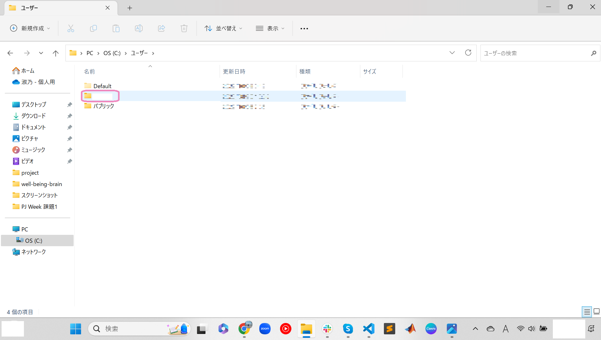

オリジナルウェブサイトを作ろう
STEP1 開発環境を準備しよう
1. パソコンのバージョンについて知ろう
- windowsマークをクリックし、設定を選択
- システム->バージョン情報をクリックする

- システムの種類を見て何ビットか(x数字にも注目)確認してね。

私のパソコンの場合は64bit(x64)でした。
2. Google Chromeをインストールしよう
公式サイトからダウンロードしよう※64bitか32bitかによってダウンロードするファイルが違うよ3. Visual Studio Codeをインストールしよう
公式サイトからダウンロードしよう※64bitか32bitかによってダウンロードするファイルが違うよこのアプリでコードをかくよ。
- ページにアクセスしてスクロール
- .zipの該当するビット数のものをダウンロード
- エクスプローラー->ダウンロードからダウンロードしたzipファイルを右クリックする
- すべて展開をクリック
- 展開(E)をクリック
- 同じファイル名で.zipでないのがダウンロードにあると思うので
- ピン止めされた項目の上で右クリック
- プロパティをクリック


場所はC:¥Users¥ユーザ名だったかな??
3.PC->OS(C:)->ユーザー->ユーザー名を開いてみよう
ピン止めされた項目は見つかったかな？？
PC->OS(C:)->ユーザー->ユーザー名の中にフォルダを作ってデータを管理するのが一般的。なぜデスクトップに保存しないのか
ホーム画面に常に表示するなどとても容量を食います。そのためデスクトップでの保存はおすすめしません。
なぜC:¥Users¥ユーザ名¥ダウンロードなどの既存のフォルダに保存しないのか
ダウンロードにはダウンロードされたファイルが保存されます。自分用のフォルダを作成した方が整理しやすくなるため作成を推奨しています。
4.PC->OS(C:)->ユーザー->ユーザー名に新しいフォルダを作ってみよう
Ctrl + Shift + Nで作成できるよ(何もないところを右クリック->新規作成->フォルダでも可)
フォルダ名は英語表記でなるべくローマ字ではなく英語として意味を持つものがおすすめ。STEP3 HTMLについて学ぼう
主な構成
// HTMLの主な構成。
<!DOCTYPE html> //htmlという言語でかいていることを宣言している
<html> //html開始
<head> //タブの中の情報を宣言
//タブに表示されるタイトルを宣言
<title>your site name</title>
//CSSとのリンクづけを行っている
<link rel="stylesheet" type="text/css" href="styles.css">
//タブの左に表示される画像をリンクづけしている <link rel="icon" href="???.png">
</head>
<body>
<header>
</header>
<main>
</main>
<footer>
</footer>
</body>
</html>
基本的なかき方
- 見出しごとに表記が異なります。
- 文字の大きさを決めるものではないことに注意しましょう。
// このように、見出しを区別することができます。
<h1>1番目の見出し</h1>
<h2>2番目の見出し</h2>
<h2>3番目の見出し</h2>
<p>内容記述</p>


4. GitHubに登録しよう
公式サイトからサインアップしようここでwebサイトを公開するよ
STEP2 パソコンのファイルとフォルダの管理について学ぼう
フォルダとは書類を収納するファイルの役割をし、ファイルは書類1枚1枚を指します。フォルダを作成してその中にファイルを収納していくよ。
1.エクスプローラーを開いてみよう
左上にあるデスクトップ、ダウンロード、ドキュメントなどピン止めされた項目を見つけてみよう。

2.ピン止めされた項目の上で右クリック->プロパティ->全般->場所で収納場所を確認してみよう
STEP4 CSSについて学ぼう
基本的なかき方
// CSSのかき方
header {
background-color: white;
color: black;
}
.logo img {
width: 150px;
height: auto;
}classの概念について
// HTMLのclassと結びつけて考える
//HTML
<div class = "classic">
</div>
//CSS
.classic{
background-color: white;
color: black;
}
STEP5 VScode(Visual Studio Code)でホームページを作ろう
1.VScodeでフォルダを開こう
- VScodeを開く

- 左上のファイル(F)をクリック
- フォルダを開くを選択
- フォルダを選択
- ターミナルでecho >ファイル名と入力し、新しいファイルを作成する。

STEP6 作成したホームページを公開しよう
1.GitHubにpushしよう
- コマンドプロンプトを開きます
git -vと入力し、Enterを押す- バージョンが表示されれば、既にインストール済み。そうでなければ
brew install gitと入力し、Enterを押す - GitHubにpushしたいファイルの変更が終わったら、左の上から3番目のマークをクリックする
- GitHubに公開をクリックし、指示に従って設定を行う
- pushするファイルの隣にカーソルを持っていくと
＋が表示されるのでクリックする - ステージされている...にpushしたいファイルがあるかを確認
- コメントを入力する
- コミットをクリックする
- 変更の同期をクリックする
- OKをクリックする
- GitHubが更新されているか確認してみてください
- GitHubのページを開いてSettingsをクリックする
- 左の項目からPagesをクリックする
- Visit siteをクリックする

※64bitか32bitかによってダウンロードするファイルが違うよ
2.公開したサイトを見てみよう


サイトは見れましたか